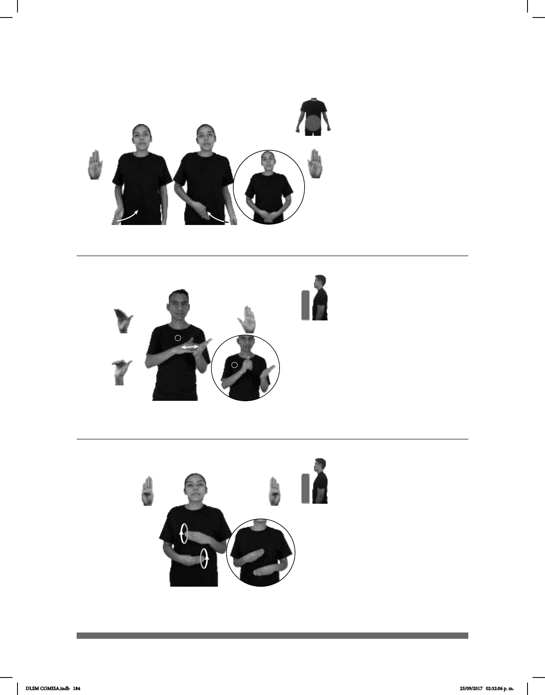

184
(B-P 220)
MOCHILA ROJA HABER DOS PAÑAL
En la mochila roja hay dos pañales.
Seña: SB
MD y MB B.P.6
MD y MB palmas
hacia adentro.
Sobre la cintura.
Las manos cruzan
hacia el centro una después de la
otra.
sust. m. Tira de tela o
celulosa absorbente que se pone a
los niños pequeños o a las personas
que sufren incontinencia de orina.
Seña: SB
MD seña que pasa
de B-P.8 a B.P.9, MB B-P.2
MD palma hacia
abajo. MB palma hacia arriba.
A la altura del pecho.
MD sobre MB.
Los dedos de MD se
retraen repetidamente sobre la
palma de MB.
sust. m. Material hecho
con pasta vegetal molido y
láminas.
Seña: SB
MD y MB B-P.1
MD y MB palmas
hacia adentro.
MD y MB a la altura
del plexo.
MD y MB se mueven
formando círculos hacia enfrente
alternadamente.
sust. m. Tipo de papel
utiliza para limpieza personal.
(B-P 221)
(B-P 222)
DISFRAZ HACER. PAPEL
El disfraz está hecho de papel.
dm-MARTÍN PAPEL-HIGIÉNICO pro-ÉL COMPRAR
Martín compró papel de baño.
DLSM COMISA.indb 184 25/09/2017 02:32:06 p. m.